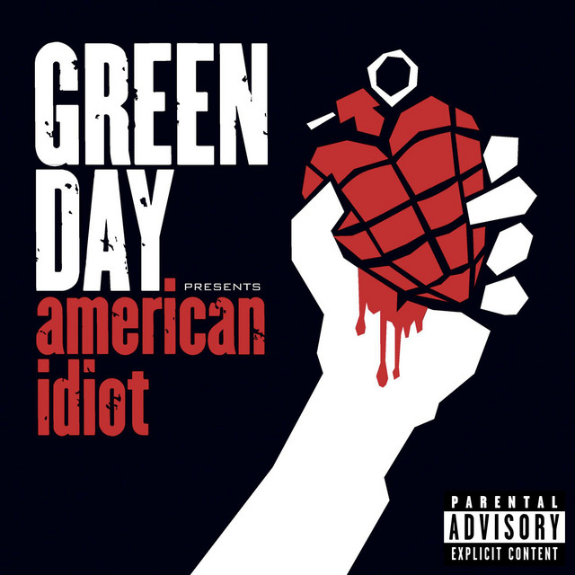

Boulevard of Broken Dreams
Green Day
I walk a lonely road The only one that I have ever known Don't know where it goes But it's home to me and I walk alone I walk this empty street On the boulevard of broken dreams Where the city sleeps And I'm the only one and I walk alone I walk alone I walk alone I walk alone I walk a.... {Chorus} My shadow's the only one that walks beside me My shallow heart is the only thing that's beating Sometimes I wish someone out there will find me Till then I walk alone ah - ah - ah - ah - ah - ah -aaah - ah - ah -ah -ah
Eu ando em uma estrada solitária A única que eu sempre conheci Não sei até onde vai Mas é lar para mim e eu ando só Eu ando nessa rua vazia Na alameda dos sonhos despedaçados Onde a cidade dorme E eu sou o único e eu ando sozinho Eu ando sozinho, Eu ando sozinho Eu ando sozinho, Eu ando sozinho {Refrão} Minha sombra é a única que anda do meu lado Meu coração superficial é a única coisa que está batendo Às vezes eu desejo que alguém por aí me encontre Até lá, eu andarei só ah - ah - ah - ah - ah - ah -aaah - ah - ah -ah -ah

Green Day
Lançada em 2004, faz parte do álbum American Idiot.